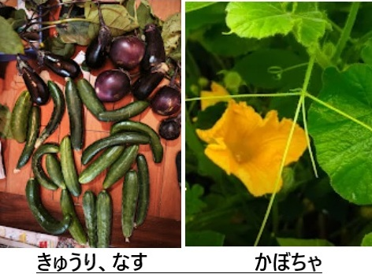

夏野菜といえば、キュウリとナス。どちらもアジア生まれで、歴史が古く、調理の幅も広い。何より、体を冷やしてくれる夏の救世主という点で、まるで幼馴染のように気が合う。
しかし、性格まで同じとは限らない。

キュウリはウリ科で、生まれながらの「生食派」。果実の九割以上が水分という、ほとんど飲み物のような野菜だ。栄養は控えめだが、かじった瞬間の清涼感は唯一無二。サラダでも浅漬けでも、とにかく「生」でこそ輝く。
一方、ナスはナス科で根っからの「加熱派」。油との相性が抜群で、炒めれば旨味がとろりと溶け出す。皮にはポリフェノールが詰まっているので、「皮ごと」が基本。焼いても揚げても煮ても美味しい、懐の深い役者だ。
育て方も対照的だ。キュウリはつる性で、支柱に絡ませる「誘引」が欠かせない。ナスは直立性で、「三本仕立て」を基本に脇芽を整理しながら形を整える。共通点は、水分管理と定期的な追肥が命綱ということ。肥料切れはすぐに実付きに響き、少し手を抜けばたちまち機嫌を損ねる。
我が家の畑では今、ナスが「更新剪定」の時期。夏の盛りを過ぎて収量が落ちてきたら、思い切って枝を切り戻し、秋まで長く収穫を続ける。遅まきのナスも今まさに成長中だ。キュウリもこまめな水やりが欠かせない。怠ればすぐ曲がったり苦味が出たりする。「今日はいいや」が通用しない野菜である。
食べ方は正反対。キュウリは「生で爽やかに」、ナスは「加熱で旨味を引き出す」。それでも、漬物や和え物に使える点は共通している。ぬか漬けにすれば、どちらも栄養価がぐんと上がる。栄養面でも、キュウリは「水分中心で控えめ」、ナスは「ポリフェノールを含む抗酸化野菜」と住み分けがはっきりしている。
つる性と直立性。生食と加熱。挙げればきりがないほど違う二人だ。それでも同じ夏に、同じ畑で、同じように水を欲しがりながら育っている。似ているようで違い、違うようで似ている。案外、いいコンビなのだ。
食卓に並べば、キュウリのシャキシャキとナスのとろり。夏の食卓は、この対照的な二人がいてこそ完成する。今年もどちらも、しっかり育てていきたい。